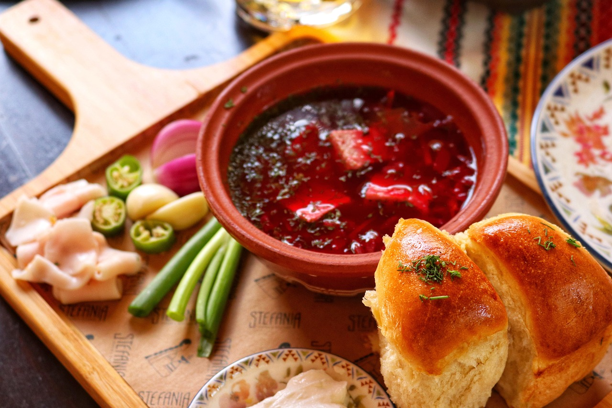
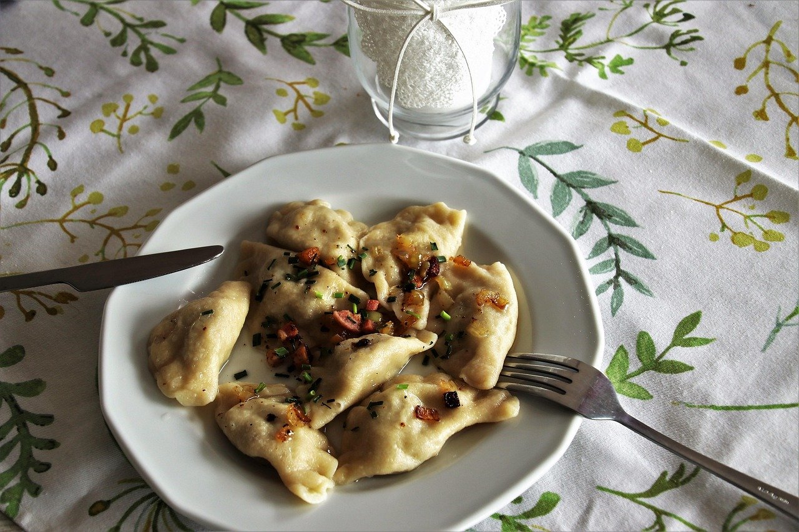

3 medium Yukon potatoes, peeled and cut into small chunks
5 cups shredded cabbage
salt,pepper to taste
2 Tbsp fresh dill, chopped
2 Tbsp fresh parsley, chopped
sour cream, to serve
Steps
In a large soup pot or dutch oven, combine short ribs, onion, carrot chunks, celery, bay leaves, peppercorns, salt and water.
Bring it to a boil and then lower the heat, cover and simmer for 2.5 to 3 hours, or until the meat is falling off the bones. Remove the scum that floats to the top with a spoon several times in the beginning.
While the broth is simmering, heat 1 Tbsp oil in a pan and sauté diced onion for 2-3 minutes. Add chopped garlic and grated carrot and sauté till the carrot starts to soften up, about 6-8 minutes. Plate it out.
In the same pan, add 1 Tbsp more oil and sauté grated beets for 4-5 minutes. Add sugar, ½ Tbsp white vinegar, and tomato paste and cook for 12-15 minutes, until the beats are tender. You will add this this to the soup pot later.
Once the Borscht stock is done, remove the short ribs. Discard the bones and shred the meat into big chunks. Discard the vegetables and strain the beef broth.
Bring the beef broth to a boil again and add back in beef along with potatoes. Let it simmer on medium low heat for 15 minutes.
Add the sautéed onion and carrot mixture along with shredded cabbage, salt and pepper. Cook for 10 minutes.
Add grated beet mixture and let it simmer again for 7-8 minutes.
Stir in 2 Tbsp white vinegar along with chopped dill, parsley and sliced garlic, and let it simmer for 2 minutes. Taste and adjust for salt and vinegar.
Let it sit at least for 30 minutes to meld all the flavors. Serve with fresh dill, a few garlic slices and a dollop of sour cream.
Ukrainian Garlic Bread

Ingridients
2 1/4 cups milk lukewarm 3 tsp sugar1 tbsp active dry yeast2 large eggs5 tbsp avocado or olive oil7 cups bread flour1/2 tbsp salt1 egg for the tops1 tbsp water for the tops1/4 cup sunflower, avocado or olive oil 5 garlic cloves minced 1 tbsp course sea salt 5 tbsp fresh dill chopped
Steps
In a mixing bowl, combine the milk, sugar and active dry yeast together. Cover the bowl with a towel and let it rest for 10 minutes.Add in eggs and oil and whisk until well-combined. Combine the salt and flour. Using either a stand mixer or your hands, add in the flour mixture in small portions, kneading it until the dough is elastic. Cover the bowl with a towel and let the dough rise for about an hour. Grease a baking pan with oil. Divide the dough into 24 equal-sized pieces, rolling them into a ball shape. Place each dough ball onto a baking sheet, leaving about 1-inch of space between each.Cover the pampushky with a towel and let them rise for about 30 minutes, or until they double in size. Preheat the oven to 350°F. In a small bowl, whisk the egg and 1 tablespoon of water together. Brush the mixture on the tops. Bake for about 30 minutes or until the pampushky turn golden brown. While the pampushky are baking, combine the oil, minced garlic, dill and salt in a small bowl. Brush the tops of the warm bread with the garlic mixture. Serve immediately and enjoy!
Potato Varenyky

Ingridients
2 cups whole milk ½ cup unsalted butter, 1 stick 4 cups all-purpose flour, plus more for rolling 1 egg 1 teaspoon kosher salt 4 large russet potatoes, peeled and quartered 6 tablespoons unsalted butter kosher salt, for water to taste 2 bay leaves ¼ cup whole milk unsalted buttersour cream fresh dill, or green onions caramelized onions, optional crispy bacon, optional
Steps
Bring a large pot to a boil, salt with water to taste. Peel the potatoes and cut into quarters. Add to water along with bay leaves and cook uncovered on medium heat until fork tender. About 10-12 minutes. Remove from heat, drain water and remove bay leaves. Add butter and mash until smooth. Add milk and using a spoon whip the potatoes until combined.Add milk and butter pieces into a pot and heat until butter melts on low heat. Mix to combine. Let cool for 5 minutes. In a bowl add flour, salt and 1 egg, whisked. Slowly add in the slightly cooled milk and butter mixture. Stir to combine. Once dough is formed, add some flour on your countertop and knead the dough for 2-3 minutes. Set the dough aside and cover to rest for 10 minutes. Once you are ready to make your first batch of vareniki, divide your dough into 3 pieces. Cover the pieces you aren’t using. Roll out the dough thinly on a floured surface to just under 1/8” thickness. Using either glass or a 3 inch cookie cutter, cut out round shapes. Keep the shapes as close as possible, keeping the scraps (add them to the unused dough to reuse). Add 1/2 Tbsp of potatoes over each round piece of dough, fold over in half and pinch together to seal and make a half moon shape. To ensure a tight seal, crimp the edges a second time with a pinch and twist motion. Place the prepared vareniki on a floured baking sheet to prevent sticking. If making ahead, you can freeze them and once frozen on the floured baking sheet, add to a freezer bag and store until ready to use. If making ahead, you can freeze them and once frozen on the floured baking sheet, add to a freezer bag and store until ready to use. Cook for about 10-12 minutes, then once the vareniki are floating and water is back to a boil, the dough should be very tender. Carefully remove to a bowl with a slotted spoon. Add butter and gently toss to combine. Add to a bowl, top with sour cream and fresh dill or green onions and enjoy. Or kick it up a notch and cook up some caramelized onions and bacon to add as a topping along with sour cream and fresh herbs.